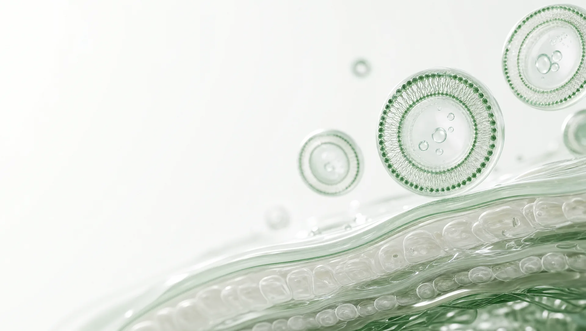
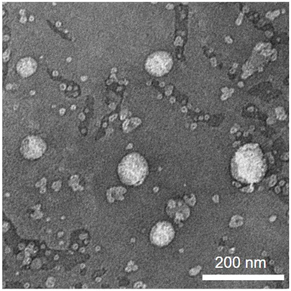
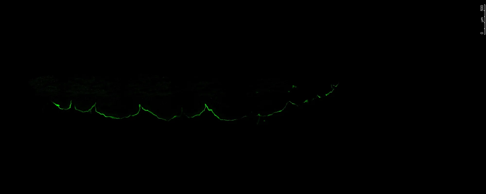
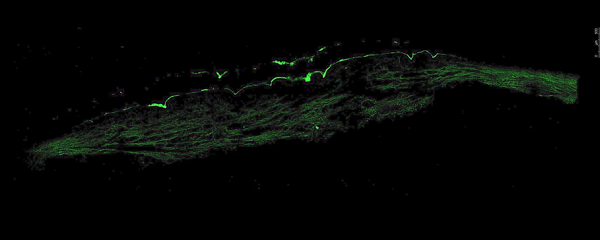
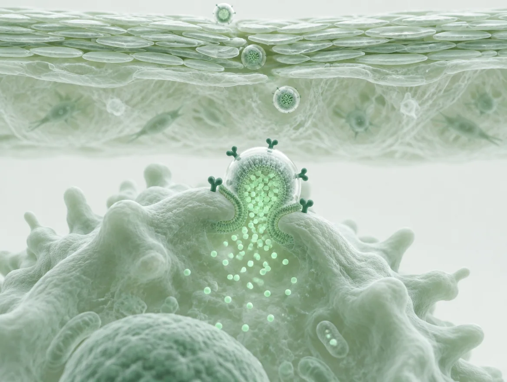
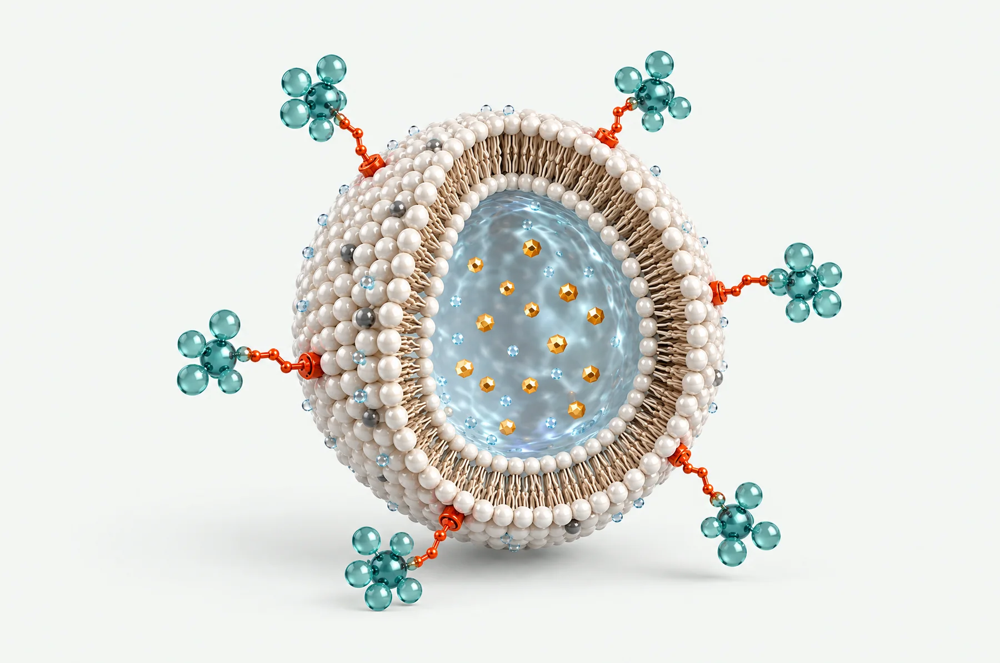

피부 장벽을 지나,
필요한 세포까지
피부는 외부 물질을 막도록 설계된 장벽입니다. 저희는 이 장벽을 유연하게 통과하는 전달체를 만들고, 그 표면에 표적 기능을 더해 진피 속 특정 세포에 유효성분을 전달하는 플랫폼을 개발합니다.

왜 전달 기술인가
좋은 성분도 피부에 닿지 못하면 소용이 없습니다. 유효성분이 피부 속에서 제 역할을 하려면 두 개의 관문을 지나야 하고, 저희는 이 둘을 하나의 플랫폼으로 풉니다.
각질층은 외부 물질을 막는 피부의 1차 장벽입니다. 일반적인 도포 성분은 대부분 표면에 머무르고, 진피까지 도달하는 양은 제한적입니다. TDS 가 이 문제를 풉니다.
진피에 도달해도 성분은 무작위로 퍼집니다. 염증 세포나 섬유아세포처럼 꼭 필요한 세포에 성분이 모이게 하는 것이 T-TDS 의 역할입니다.
T-TDS 는 새로운 전달체가 아니라, 상용화를 마친 TDS 위에 표적 기능을 더한 것입니다. 화장품에서 쌓은 제형 · 공정 · 안정성 자산이 그대로 이어집니다.
TDS — 탄성 에토좀

각질층을 유연하게 지나 진피로
인지질 소포체에 계면활성제와 에탄올을 조합해 막이 유연한 전달체를 만들었습니다. 각질층 사이를 변형하며 통과해 유효성분을 진피까지 데려가고, 물에 잘 녹는 성분과 기름에 잘 녹는 성분을 모두 담을 수 있습니다.

진피 도달 — 인체 피부 단면 형광 이미지
사내 시험 사진
Penellagen®같은 펩타이드를 TDS 에 담아 도포
형광(FITC) 표지 불가사리 콜라겐 펩타이드를 인체(카데바) 피부에 도포한 뒤 단면을 촬영했습니다. 위가 피부 표면, 아래가 진피입니다. 펩타이드 단독은 표면의 선에 머물렀고, TDS 에 담은 Penellagen® 은 진피층 전체에 분포했습니다. 위탁 시험(경북테크노파크) · 축척 막대 500 μm · 색보정 없음.
T-TDS — 표적 전달

원하는 세포에 닿는 전달
TDS 표면에 표적 리간드를 결합해 진피 속 특정 세포에 선택적으로 전달합니다. 포도당을 결합하면 포도당을 많이 쓰는 염증성 대식세포를, 섬유아세포 활성 단백질(FAP)을 겨냥한 리간드를 결합하면 활성화된 섬유아세포를 표적합니다.
리간드를 바꾸면 표적이,
성분을 바꾸면 용도가 바뀝니다
전달체를 새로 만들지 않고 두 가지 요소만 바꿔 확장합니다. 화장품 원료에서 신약 후보까지 같은 플랫폼 위에 있는 이유입니다.
표적 리간드를 바꾸면
표적 세포가 바뀝니다
전달체 표면에 결합한 작은 리간드가 주소 역할을 합니다. 리간드만 교체하면 같은 전달체가 다른 세포로 향합니다.
- 포도당 리간드염증성 대식세포 (M1)
- FAP 리간드활성화된 섬유아세포
- 근세포 리간드근육 세포 — 개발 중
- 모낭세포 리간드모낭 세포 — 개발 중

1 2유효성분을 바꾸면
기능이 바뀝니다
안에 담는 성분이 제품의 역할을 정합니다. 같은 전달체가 화장품 원료도, 스킨부스터도, 치료제 후보도 됩니다.
- 콜라겐 펩타이드진피 재생 · 탄력 — 화장품 원료
- 아피제닌항염 — 스킨부스터 · 건선 치료제 후보
- 해양 PDRN재생 · 수복 — 재생 부스터
- 다음 성분항염 · 재생 · 항노화 파이토케미칼
두 요소의 조합이 곧 제품입니다
표적 × 유효성분| 표적 리간드 ↓ · 유효성분 → | 콜라겐 펩타이드 | 아피제닌 | 해양 PDRN | 다음 성분 |
|---|---|---|---|---|
| 리간드 없음 · TDS | Penellagen® · LABOPE상용화 | |||
| 염증성 대식세포 (M1) | Delvene®출시 준비 · 2026.12국소 건선 치료제검증 · IND 준비국소 염증성 질환 치료제개발 | |||
| 활성화된 섬유아세포 | 재생 · 수복 부스터검증국책과제 | |||
| 근세포 | 근감소증 치료제개발 | |||
| 모낭세포 | 탈모 치료제개발 |
채워진 칸이 지금 진행 중인 제품 · 프로그램이고, 점으로 비운 칸은 같은 전달체와 공정으로 열 수 있는 다음 조합입니다. 전달체를 새로 만들지 않아 개발 기간과 위험이 줄어듭니다.
- 1)특허 건수 및 등록 · 출원 구분은 사내 소개자료(2026-09 기준) 표기를 따랐습니다. 국가별 출원 · 등록 현황은 별도 확인이 필요합니다.
이 기술이 제품이 되는 곳
사업 자세히화장품 원료 Penellagen® 과 브랜드 LABOPE, 병의원 스킨부스터 Delvene®, 그리고 신약 파이프라인. 같은 플랫폼에서 나온 세 영역을 소개합니다.